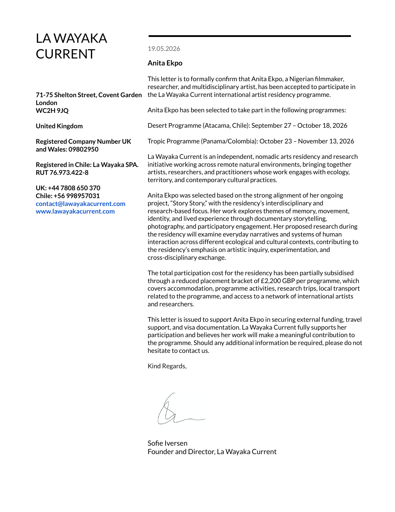
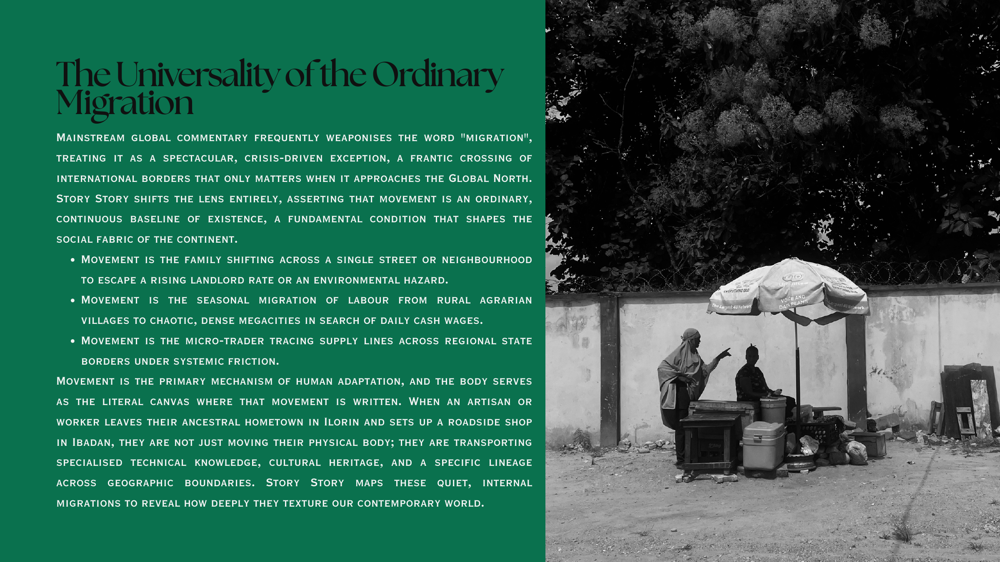
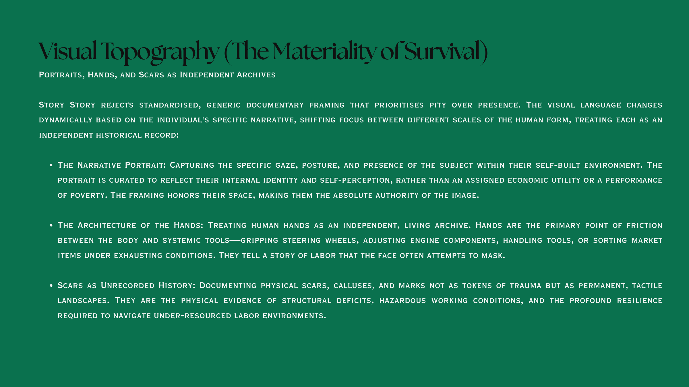
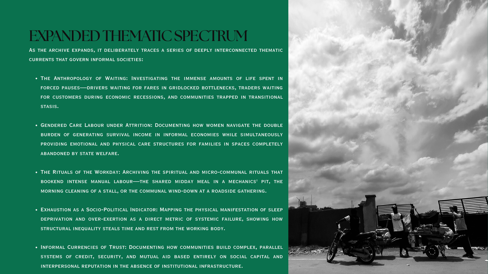
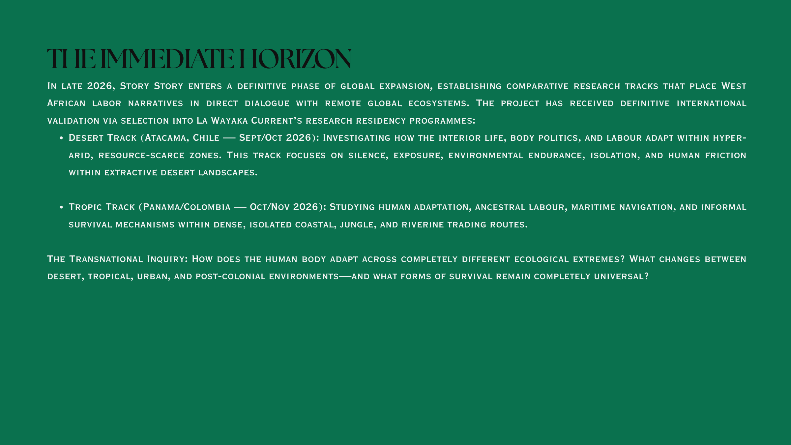

Residency fund · 2026
Story Story
A living archive of memory, movement, labor, and everyday survival by Anita Weyinmi Ekpo.
Anita has been accepted into La Wayaka Current's 2026 Desert and Tropic residency programmes, with a partial scholarship reducing attendance costs by GBP 4,400, about USD 5,815, across two tracks. This page gathers the video brief, the invitation letter, and the remaining funding ask in one place.
Why it matters
Proximity without pressure.
Story Story is not a quick documentary stop. It is a long-term practice of staying with people and places long enough for trust, rhythm, and ordinary life to reveal themselves.
The archive follows people whose lives are rarely kept by formal institutions: mechanics, traders, drivers, shop owners, farmers, care workers, and communities adapting across changing landscapes.

Confirmed invitation
La Wayaka Current selected Story Story for two 2026 tracks.
- Desert Programme
- Atacama, Chile · September 27 to October 18, 2026
- Tropic Programme
- Panama and Colombia · October 23 to November 13, 2026
- Partial scholarship
- GBP 2,200 per residency track, GBP 4,400 total attendance support across the two La Wayaka Current tracks, approximately USD 5,815 as of June 26, 2026
La Wayaka Current's letter states that Anita's work strongly aligns with its research-based focus and supports her search for external funding, travel support, and visa documentation. The scholarship helps make attendance possible, but it does not cover the full cost of getting the work to the field.
Open the full invitation letterFunding ask
Fund the costs the scholarship does not cover.
The residency has already contributed a GBP 4,400 partial scholarship toward attendance, approximately USD 5,815 as of June 26, 2026. Anita now needs additional support for the costs that make ethical fieldwork possible: international travel, local movement outside covered programme transport, equipment, film, audio, archival storage, translation, honorariums, field guides, and living support.
- GBP 4,400 scholarship
- Attendance support already provided by the residency, GBP 2,200 for each accepted track, approximately USD 5,815 total as of June 26, 2026.
- Travel + equipment
- Additional funding is needed for flights, field mobility, recording gear, storage, materials, visas, and production costs.
- Late 2026
- Residency windows in Chile, Panama, and Colombia, with field preparation needed before departure.
From the deck
The strongest frame is the living archive.




Support the next chapter
Fund a serious archive before the trip becomes the constraint.
The invitation is real. The scholarship is real. The dates are set. The work now needs the practical backing that lets Anita travel, gather material carefully, compensate people fairly, and preserve the archive with care.
Sponsor this residency